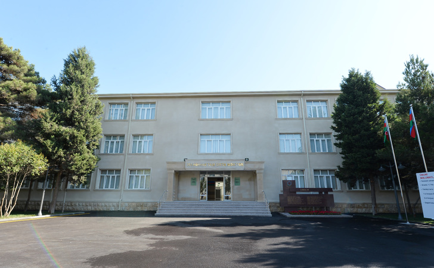
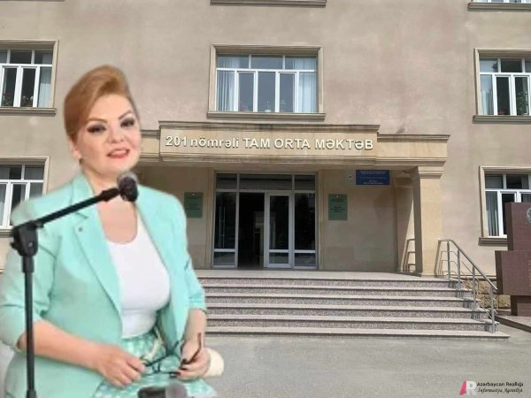
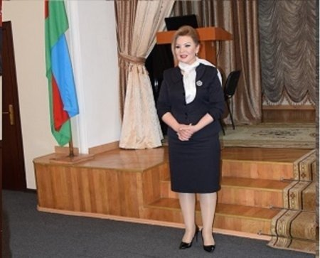

Bakı şəhəri, Nizami rayonu, 201 nömrəli tam orta məktəb 1964 – cü ildən fəaliyyət göstərir. Məktəbdə tədris Azərbaycan və rus dillərində həyata keçirilir. 2012-ci ildə məktəb “İlin ən yaxşı ümumtəhsil məktəbi” müsabiqəsinin qalibi olmuşdur. Məktəbdə 103 nəfər müəllim fəaliyyət göstərir. Müəllimlərimizdən 1 nəfər “Qabaqcıl Təhsil işçisi “, 1 nəfər isə “Əməkdar müəllim “ adına layiq görülmüşdür. 2011-ci ildə, 2014-cü ildə iki müəllmimiz “İlin ən yaxşı müəllimi” müsabiqəsinin  qalibi olmuşdur. Məktəb 2 korpusdan ibarətdir. Məktəbdə 250 nəfərlik akt zalı, 2 kitabxana, qış idman zalı, 78x38 ölçüdə futbol, 20x40 ölçüdə mini futbol, basketbol, voleybol meydançaları vardır. Məktəbimizin nəzdində 2014-ci ildən qızlardan ibarət futbol komandası fəaliyyət göstərir. Futbol komandamızla birlikdə AFFA-nın və UEFA-nın veteran futbolçuları ilə görüşlər keçirilir. Həmçinin, Avropa komandalarının məşqçiləri məktəbdə ustad dərslər aparmışlar. Qızların futbolda inkişafını nəzərə alaraq məktəbimiz AFFA-nın baza məktəbinə çevrilmişdir. Qızlardan ibarət Mili komandanın oyunçuları bizim məktəbdə təhsil alır, məşqlər məktəbdə keçirilir. Bundan başqa, 2017-ci idə məktəbimiz əsaslə təmir olinmuşdur. Məktəbdə 5 kompüter otağı, 8 elektron dərslərin tədrisi otağı, 66 kompüter (20 şagirdə 1 kompüter düşür), 16 proyektor, 2 ədəd MİMİO proqramları üçün aparatlar , həmçinin 4 elektron lövhə vardır.
Bir millətin gələcəyini məhv etməyin ən asan yolu onun təhsilinə zərbə vurmaq və savadsız cəmiyyətin formalaşmasına nail olmaqdır. Bəli,"Təhsil millətin gələcəyidir". Necə deyərlər, "Qüvvət elmdədir başqa cür heç kəs, heç kəsə üstünlük eyləyə bilməz". Azərbaycanın təhsil sahəsində uzun illər dövlət tərəfindən həyata keçirilən islahaltlar nəticəsində ölkədə savadlı kadrların formalaşması geniş vüsət alıb. Bu işdə yeni-yeni məktəblərin tikilərək istifadəyə verilməsi, yaxud yenidən qurulması, həmçinin maddi-texniki bazanın formalaşdırılması mühüm rol oynayıb. Lakin təəssüflə qeyd etməliyik ki, təhsil sahəsində hələ də çox ciddi nöqsanlar mövcuddur və bu problemlərin həll olunmaması gələcəyimizi ciddi təhlükə altına qoya bilər. Belə problemlərdən biri də Bakının Nizami rayonunda yerləşən 201 saylı tam orta məktəbdə tüğyan edir. Hərçənd burada baş verən qanunsuzluqların miqyası o qədər böyükdür ki, adıçəkilən məktəbi elm ocağı adlandırmağa da adamın dili gəlmir. 201 saylı orta məktəb sanki "yeraltı qanunlar"la idarə olunur və direktor Afaq Əliyeva da özünü əməlli-başlı "kriminal avtoritet" kimi aparır. Afaq Əliyeva haqqında şikayətlər o qədər çoxdur ki, artıq sayı-hesabı da bilinmir.
Adıçəkilən məktəbin rəıhbərliyi haqda növbəti şikayəti təhsil müəssisəsinin tarix müəllimi, tarix üzrə fəlsəfə doktoru Cəmalə Əsgərova edib. Cəmalə Əsgərovanın iddialarına inansaq məktəbin direktoru Afaq Əliyeva müəllimləri iki hissəsyə bölüb. Onun qanunsuz əməllərinə boyun əyənlərə və sözünü deyənlərə əlavə dərs saatları mükafat kimi verilir. Digərləri isə ya töhmət alır, ya da dərs saatları azaldılır. Ancaq bütün bunlar Afaq Əliyevanın özbaşınalıqlarının yalnız kiçik bir hissəsidir. Belə ki, özünü "avtoritet" hesab edən direktor dərsə gəlməyən  uşaqları qanunsuz olaraq qiymətləndirir, şagird çatışmazlığı səbəbilə sinfi ləğv edir, müəllimləri "şərəfsiz" adlandıraraq şəxsiyyətlərinə həqarətlə yanaşır, səlahiyyəti olmadığı təqdirdə müəllimləri işdən çıxarır, yaxud yerdəyişmə həyata keçirir. Bütün bunlarla yanaşı bir dəfə tutulmalı olan dərs cədvəlini hər gün dəyişdirir, qəbuluna isə ümumiyyətlə öncədən yazılmadan düşmək mümkün olmur. Bax Afaq Əliyeva bu cür diktator direktor kimi 201 saylı orta məktəbin tarixinə adını yazdırmağı bacarıb. Hər halda tarix müəllimi Cəmalə Əsgərovanın iddialarından bu qənaətə gəlmək mümkündür.
Svetlana Hüseynovanın iddiasına görə, direktor Afaq Əliyevanın göstərişinə əsasən 8r sinfinin sinif rəhbəri Valeh Cəbrayılov dərslərdə iştirak etməyən Məcid Nəsibov adlı şagirdə fənn müəllimlərinin əvəzinəsaxta qiymətlər yazıb. Əvəzində isə rüşvət almaqla məsələni ört-basdır ediblər. Lakin fənn müəllimləri Məcid Nəsibov adlı şagirdi tanımadıqlarını və sözügedən qiymətləndirmənin onlara məxsus olmadığını bildirirlər. Svetlana hüseynova daha öncə direktor əvəzi işləyən Rəhilə Məmmədovanın da Qazaxısrtanda yaşayan şagirdi Həbib Muradovunadının 10r sinfinin jurtnalında saxlanmasına göstəriş verərək büdcədən 2 min manata qədər vəsaitin mənimsənilməsinə şərait yaradıb. Direktor müavini işləyən Svetlana Hüseynova bütün bu özbaşınalıqlarla bağlı Elm və Təhsil naziri Emin Əmrullayevə, Bakı Şəhəri üzrə Təhsil İdarəsinin müdiri Mehriban Vəliyevaya və digər aidiyyatı qurumlara müraciət edib. Ümid edirik ki, səsləndirilən iddialarla bağlı 201 saylı orta məktəbdə aidiyyatı qurumlar tərəfindən ciddi araşdırma aparılacaq və qanunpozuntuları aşkarlanacağı təqdirdə vciddi ölçü götürüləcək. Xatırladaq ki, Bakı şəhəri, Nizami rayonu, 201 nömrəli tam orta məktəb 1964-cü ildən fəaliyyət göstərir. Məktəbdə tədris Azərbaycan və rus dillərində həyata keçirilir. 2012-ci ildə məktəb “İlin ən yaxşı ümumtəhsil məktəbi” müsabiqəsinin qalibi olub. 2022-2023